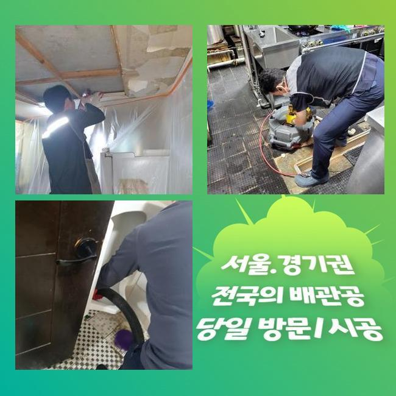
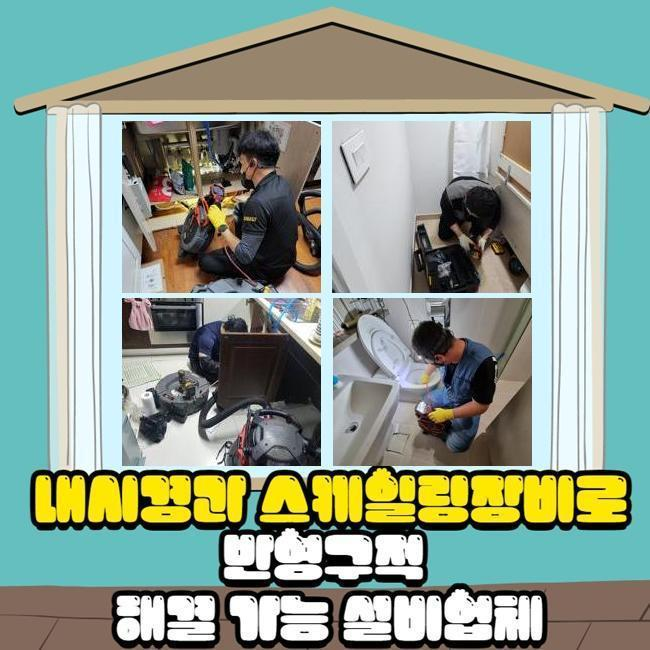
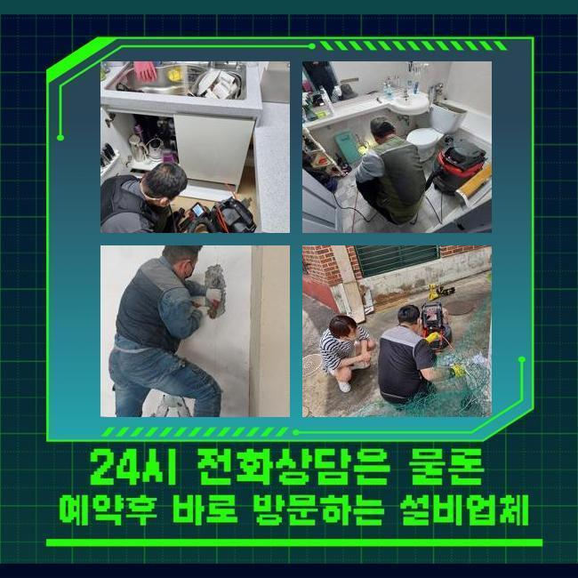
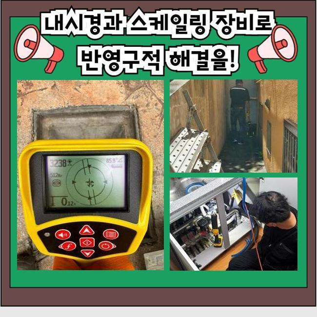
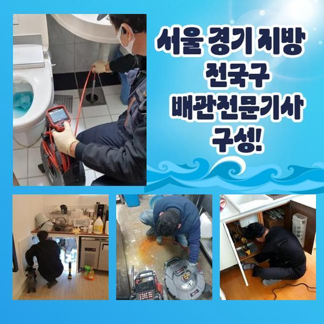
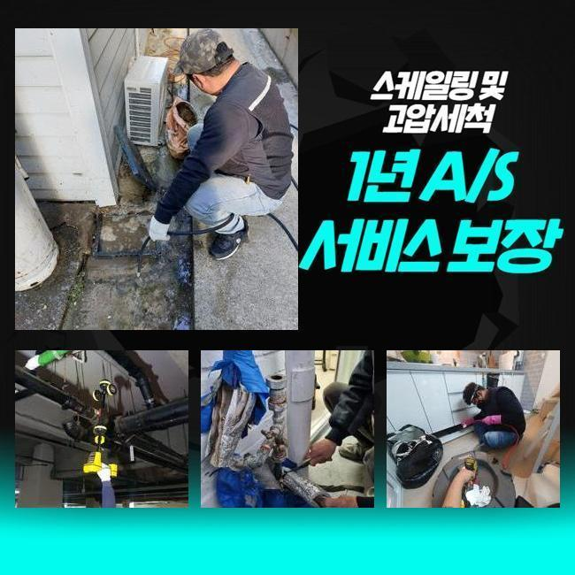
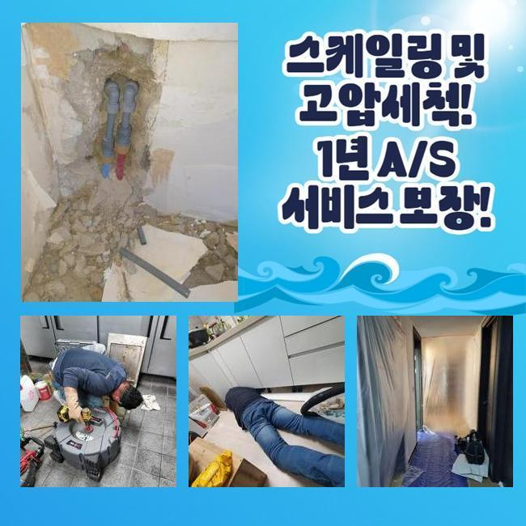

🏠 수원 파장동대변기뚫음 조원동 맨홀막힘 누수탐지
수원 원동 변기막힘 전문 시공 후기

📋 작업 개요
- 위치: 수원 원동, 원동, 수원
- 서비스 유형: 변기막힘, 하수구막힘, 배관막힘, 맨홀막힘, 누수수리, 역류해결, 뚫는업체, 배관청소, 고압세척
- 작업 일시: 2025. 1. 14. 21:40
- 업체명: 하수구수사대 (010-5615-2118)
🔍 문제 상황
수원 파장동대변기뚫음 조원동 맨홀막힘 누수탐지
상업적인 건물 내부에서 하수구의 고장이 발생했음을 듣고서 보완을 해드리고자 막힘이 생긴 곳으로 가봤습니다
규모가 꽤 되는 건물이면 각 공간마다 장착된 수로가 하나로 수렴하는 설비 구조를 갖춘 설치장소들이 대다수입니다
어떠한 구간에서 막힘이 도래하게 되면 연쇄적으로 다른 배관을 막아서 많은 거주자분들이 어려움을 호소할 수 있습니다
오늘 이야기할 하수구 설치장소는 많은 점포들이 운영되고 있던 상가였는데 예기치 않게 하수구 중단 이슈가 터져서 여러 매장들이 장사를 못해서 불편감과 동시에 경제적 곤란까지 건물 자체에 비상이 걸렸다고 해요
이렇게 거대한 건물에서 하수구 이슈가 거듭 터진다면 세입자나 건물주 모두에게 어려움을 부풀릴 수 있다보니 의뢰받는 즉시로 설치된 하수구로 향합니다
주소지에 도달하면 그중에서도 피해가 강력한 장소먼저 들러서 통수 검사를 해보았는데요
통수검사의 경우는 수돗물을 받아서 붓거나 강력하게 오픈해서 관로 속으로 내려보낸 물이 얼마나 빨리 나가는지를 측정하여 막힘 정도를 파악합니다
수돗물의 액체가 나아가는 속도가 감소되었고 거기다가 좀처럼 내려가지 않는 순간이 일어난다는 사실을 직접 관측할 수 있었는데요
막힘으로 인한 여러 증세가 야기됐다는 점은 배관의 내면에 생각보다 많은 오염원인들이 자리하고 있을 확률이 매우 유력합니다

🔎 원인 분석
💡 전문가 진단: 정밀 진단 장비를 사용하여 슬러지의 고착 여부를 판명하고 타격/세척 작업을 실시했습니다.
배관 속에 켜켜이 쌓여왔을 오물들을 다 처리해서 말끔하게 되돌리지 못하면 인접한 배관 통로까지도 장애가 널리 번져나갈 수 있으니 작업의 진행도를 올렸어요
하수구 막힘을 만드는 주요인은 물이 나가는 통로를 메꿔버린 오염물질이기 때문에 남김 없이 삭제시켜야만 통로가 나옵니다
고객님들이 평범하게 물을 쓰실 때마다 누적물이 쌓이게 되는데 주방이나 바닥의 배수구를 통과하여 옥외로 향하는 과정마다 일정한 섹션에 쌓이게돼서 심각한 장애물으로 전락합니다
정말 폐기의 목적으로 쓰레기를 던져넣는 것이 아닐지라도 중금속이나 석회 성분 그리고 미네랄 성분이 고착화되기도 해요
파이프라인을 확인해 봤더니 기름 슬러지 혹은 머리카락과 같이 비수용성의 물질들이 한껏 엉켜있었습니다
이렇게 똘똘 뭉쳐있다가 장기화되면서 틈도 없이 붙어버리면 처치곤란의 방해물이 돼요
통로를 꽉 채운다면 깊숙한 곳에서 부패된 물의 역류도 피할 수 없게 되는 난관에 봉착하게 됩니다
날마다 물과 만나기 때문에 부패속도가 빨라질 환경을 조성하는 것과 같은데 축축하고 습한 냄새까지 실내 곳곳에 퍼져서 생활이 더욱 까다로워집니다
물기와 항상 맞닿아있는 파이프 속은 내내 습하기에 위생도 더 나빠지는데다 냄새분자가 확 퍼져버려요
오물이 쌓인 쪽들이 다수의 공간일 수 있다보니 검토를 꼼꼼히 해야 합니다
하나의 막힘이라면 석션기의 작동을 통해서도 쉽게 물꼬를 틔울 수 있습니다

🔧 작업 과정
배배 꼬여있는 상태거나 관로가 복잡하게 이어져있다면 흐름을 봉인하는 포인트들이 기대이상으로 기대이상으로 찾아볼수록 정말 많을 것입니다
배관이 가진 속성이나 오염된 곳이 얼마나 넓은지 사전 조사를 해줘야 합니다
아무리 물을 쏘아대더라도 물길이 도로 나오지 못하면 과하게 커져서 빈틈이 없다거나 단단해졌을 수 있어요
이와같은 심한 막힘을 타개하고자 한다면 배수장애를 유발한 대상을 찾아서 덜어내야 합니다
방해물의 강직도와 같은 실제 모습을 잘 알아야 시공 단계를 구상할 수 있어요
관로 속에 주입하는 카메라는 육안으로 인식하기 힘든 곳까지 밝게 관로 안을 보여주는 활용도가 좋은 관측장치로 노폐물의 특성과 크기를 판단할 수 있도록 보조합니다
내시경을 틈틈이 넣어서 체크하면 작업이 문제 없이 진행되고 있는지 수시로 검사할 수 있어서 작업의 완성도가 높아집니다
시공 전에 배관의 상태를 사전점검하기 위한 목적과 마무리에 작업의 퀄리티를 다시금 체크하기 위한 목적이 있으니 매현장마다 작동시킵니다
유력한 지점들을 다 체크해보니 물길이 모이게 되는 메인배관 포함 넓은 범주에 걸쳐서 오물이 밀착된 상태라는 것을 몸소 깨닫게 되었습니다
실내배관이라면 전동모터의 파워를 소지한 단단한 와이어 스프링이나 회전력 좋은 샤프트로 오물을 잘게 쪼개서 막힘건을 풀어나갈 수도 있는데요
하지만 더욱 깊은 옥외 시설물의 생각보다 넓은 섹션들에 노폐물들이 덕지덕지 붙어버렸다면 획기적인 변화를 맞이하기는 곤란할 수 있어요
물의 이동량이 많은 곳일수록 이물질도 많이 쌓일테니 소박한 석션으로는 외부배관은 후처리도 쉽지 않습니다
대형 배관을 처리할 때는 타겟팅해서 강하게 물을 발사하는 고압세척기의 힘을 빌리는 방식이 바람직할 수 있습니다
크고 작은 배관에다 두루 쓰는데 구경에 배치하기 좋은 노즐을 끼워서 이물질을 타격하는 원리인데 딱딱하게 굳어버린 고착물이라도 탈거시켜줍니다
설치된 배관들은 보통 노후됐다면 더 약해지므로 작업 강도를 정하는 단계를 철저히 수행합니다
세정을 해주기 전에 배관의 튼튼한 정도 역시 꼼꼼히 숙지를 해주고 하수구의 세정업무를 시행해요
적절한 강도로 분사하면서 마치 마라톤하듯 배관 청소를 담당해드리면서 답답하게 빈 틈도 없이 막아서고 있었던 오물을 말끔히 소멸시키게 되었네요


✅ 작업 완료
마무리 단계로 모든 이물이 자취를 감췄는지 다시 체크를 하면 성능을 회복시키는 모든 단계가 끝납니다
하수가 잘 방출되는지 배수테스트도 빠지지 않고 실행하고서 질의사항이 있다면 답해드리고 사용법도 알려드립니다
마감 정리가 잘됐나 보고 정상적인 이용이 바로 가능할 것인지 끝까지 신중을 기하고 있습니다
여러 기구들을 빠지지 않고 쓰면서 하자가 발생하지 않도록 하수구 이슈를 유연하게 맞춤으로 수습해 드리겠습니다!
하수시설에 연관된 추가 질의사항이 있으실 때도 연락을 편하게 걸어주세요




⚠️ 베란다 누수 및 방수 관리 방법
- ✅ 비가 많이 올 때 창틀 주변이나 아래층 천장에 얼룩이 생기는지 정기적으로 확인해 보세요.
- ✅ 우수관 주변 실리콘 마감이 들뜨거나 깨진 틈새가 있는지 손상 여부를 수시로 체크하세요.
- ✅ 베란다 바닥 타일의 줄눈(메지)이 소실되면 그 틈으로 물이 침투하여 누수가 유발됩니다.
- ✅ 누수 의심 증상 발견 시 방치하면 아래층 손실이 커지므로 즉시 전문가의 진단을 받으십시오.
💡 핵심 정리
- 확실한 장비 작업(내시경 점검 및 샤프트 스케일링)으로 원인을 뿌리 뽑습니다.
- 작업 후 1년 이내에 동일한 부위 재발 시 100% 무상 A/S 서비스를 보장합니다.
- 서울 · 경기 · 인천 전 지역에 24시간 언제든 긴급 출동할 수 있도록 항시 대기 중입니다.
❓ 자주 묻는 질문 (FAQ)
🚨 수원 원동 변기막힘 문제로 고민이신가요?
정확한 원인 진단과 확실한 시공으로 재발 없는 해결을 약속드립니다.
24시간 긴급 출동 | 서울 · 경기 · 인천 전지역 | 1년 내 재발 시 무상 A/S